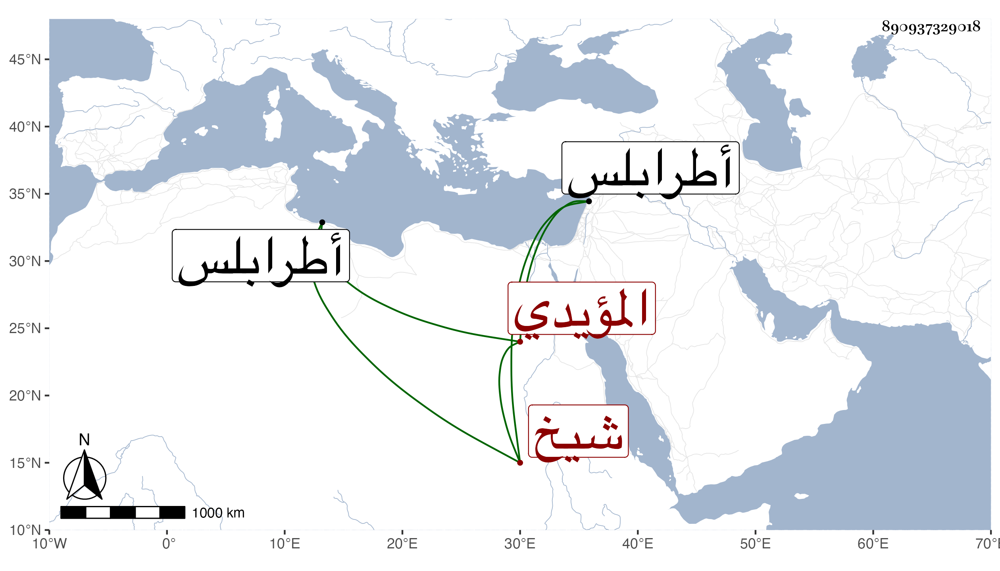

0902Sakhawi.DawLamic.ITO20230111-ara1.EIS1600.890937329018
Biography ID: 890937329018
667
قانباي المؤيدي شيخ ويعرف بالساقي وبقراسقل . تأمر عشرة في أيام الأشرف إينال أو قبلها يسير وصار رأس نوبة بطرابلس . مات في توجهه إلى الجولان في البحر المالح سنة ثلاث وستين وقد ناهز الستين وكان متوسط السيرة مسرفا على نفسه .
